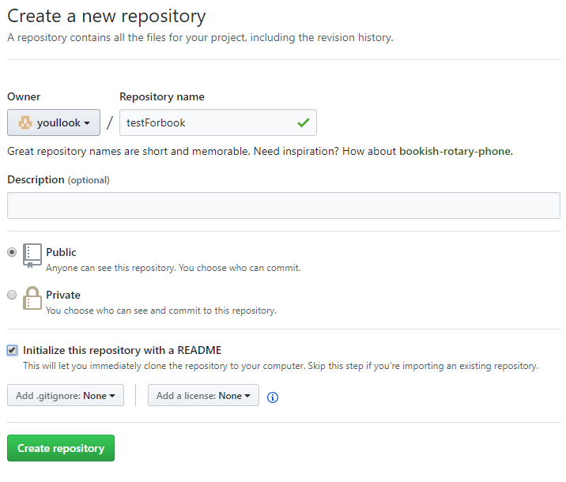
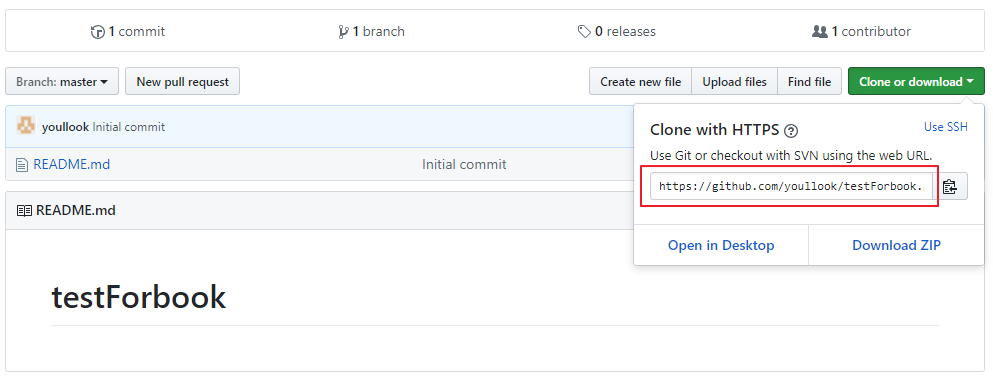

Introduction
建置GitBook
提交至Github
使用GitBook發布
參考文件
Published with GitBook
提交至Github
提交至Github
[STEP1] Github建立專案
註冊
Github
並建立一個新的專案
勾選Initialize this responsitory with a READNE

[STEP2] Clone Project至本地

[STEP3] 將已建置GitBook的檔案拷貝進去並上傳至Github
results matching "
"
No results matching "
"